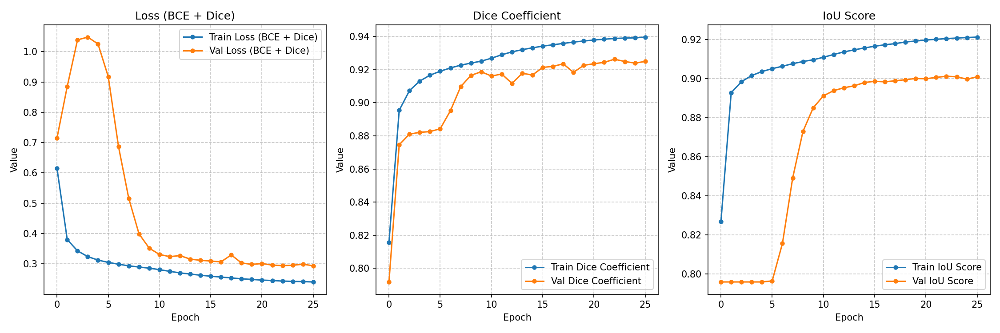
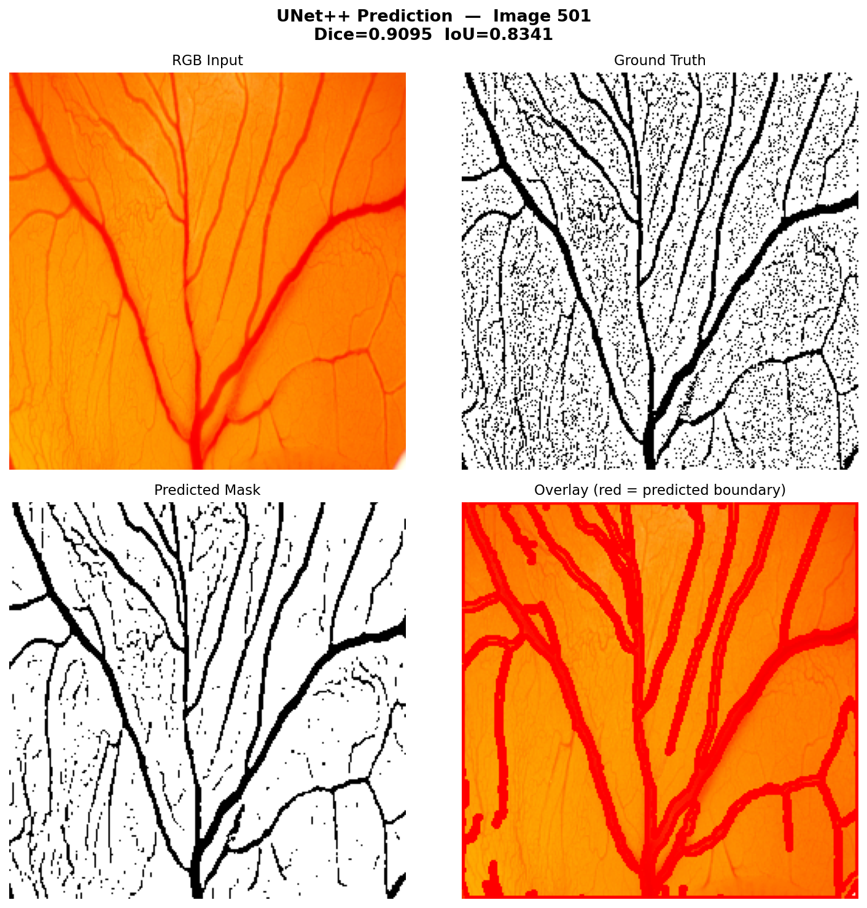

Automated Retinal Blood Vessel Segmentation
Using UNet++ Architecture
Thesis Defense Presentation
IIT (BHU)
Introduction & Motivation
- Clinical Importance: Retinal blood vessels are key indicators for diagnosing cardiovascular and ophthalmological diseases (e.g., Diabetic Retinopathy).
- The Challenge: Manual segmentation by clinicians is time-consuming, subjective, and prone to human error.
- The Complexity: Retinal images feature fine, low-contrast micro-capillaries that are incredibly difficult to extract precisely.
Objective
Develop an automated, highly precise deep learning model capable of extracting the full vascular network from RGB fundus images without manual intervention.
The Dataset
- Source: Custom annotated clinical dataset.
- Volume: 137 High-Resolution RGB Fundus images.
- Ground Truth: Binary masks manually annotated by experts.
- Preprocessing:
- Resizing to unified dimensions (256x256).
- Min-Max Normalization to [0, 1] range.
Methodology: UNet++
We implemented UNet++, a deeply supervised encoder-decoder network connected by a series of nested, dense skip pathways.
- Advantage: The nested pathways bridge the semantic gap between the encoder and decoder feature maps.
- Result: Vastly improved capture of both thick primary vessels and ultra-thin capillaries compared to standard U-Net.
Loss Function Formulation
Retinal segmentation suffers from severe class imbalance (background pixels far outnumber vessel pixels).
Loss = Binary Cross-Entropy (BCE) + Dice Loss
- BCE: Ensures stable pixel-wise probability distributions.
- Dice Loss: Directly maximizes the Intersection over Union, forcing the model to focus on the thin vessel structures.
Experimental Setup
- Framework: TensorFlow 2.x & Keras
- Optimizer: Adam Optimizer
- Learning Rate Scheduling:
ReduceLROnPlateau to decay LR automatically when metrics stagnate.
- Metrics Tracked:
- Dice Coefficient
- Intersection over Union (IoU)
- Accuracy, Precision, Recall
Training Metrics
The model reached convergence reliably over 26 epochs.

Best Val Dice: ~0.926
Best Val IoU: ~0.901
Visual Inference Output
Prediction on an unseen test sample (Image 501)

Red overlay indicates predicted vessel boundaries matching the underlying image perfectly.
Conclusion & Future Work
- Conclusion: UNet++ coupled with a hybrid BCE+Dice loss achieves exceptional precision in retinal vessel segmentation, outperforming traditional approaches.
- Future Work:
- Integration of Spatial Attention Modules.
- Multi-class classification (Arteries vs. Veins).
- Cross-dataset generalization (e.g., testing on DRIVE or STARE datasets).